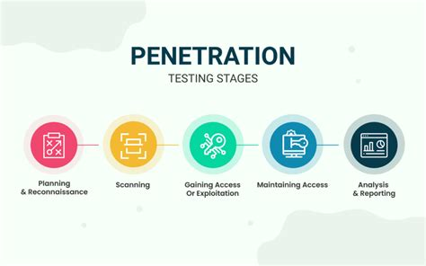

MIFOS X VULNERABILITY ASSESSMENT AND PENETRATION TESTING
Organization:
Mifos Initiative
Mentor:
Godfrey Kutumela
I. Introduction
The Google summer of code program has been one of the greatest experiences of my life.
During the summer, I performed a vulnerability assessment and penetration testing engagement on the
Mifos X community application, web application, and the Apache Fineract APIs, to identify vulnerabilities which can be
exploited by malicious hackers and help provide patches for these known vulnerabilities.
II. The Project Goals
The main goal of this project is to re-assuring the more Enterprise-y type Mifos clients that they can safely bet on Mifos X as an MFI platform.
- Do a detailed Information gathering while setting the scope of the penetration testing engagement. Perform Inventory and ranking of in scope assets.
- Setup Test environment.
- Carry out Dynamic application security testing using Owaspzap and Wapiti.
- Generate and review OWASP Zap report and Waspiti report. At this point, examine the application’s security posture.
- Eliminate False Positives from ZAP result by manually Pentesting the Mifos X application looking out for OWASP top 10 and CWE/SANS top 25 security vulnerabilities and the Fineract APIs looking out for OWASP API top 10 vulnerabilities.
- Generate 2 reports:
- An executive summary report.
- A detailed VAPT report to help developers patch the gaps found in the course of the pentest.
- Generate a risk register to analyze and assess findings and its risks to the organization.
- Carry out static application security testing using CodeQL and analyze the results.
- Document SAST process and result.
- Work with developers to provide patches for known vulnerabilities.
III. Description of Work
The Penetration test engagement followed the following phases.

- Planning and Reconnaissance Phase
- The planning phase involved defining the scope of the Pentest and performing asset inventory. I identified all the organization's assets and ranked the in-scope assets. Then I moved to the Reconnaissance phase which helped in determining an organization’s information on the Internet such as network architecture, operating systems, applications, and users. The goal is to gather as much data as possible to enable me plan an effective attack strategy.
Reconnaissance can be categorized as either active or passive depending on what methods are used to gather information. Passive reconnaissance pulls information from resources that are already publicly available, whereas active reconnaissance involves directly interacting with the target system to gain information. Typically, both methods are necessary to form a full picture of the target’s vulnerabilities.
- I did carry out a censys search, to search for certificates, open ports and services running on those ports.
- I also did web crawling, and google dorking.
- I did a wappalyzer search to see the technologies being used and also check if they had any known vulnerabilities.
- Made use of shodan to check for any disclosed CVEs in the software versions seen from above.
- In this phase, I also did a github reconnaissance and I made use of the tool Trivy to search through commit messages to see if I could find any sensitive information which I did.
- I did a license audit on all the opensource components / dependencies.
- Scanning phase
- Once all the relevant data has been gathered in the reconnaissance phase, it’s time to move on to scanning. In this phase, I made use of various tools to identify open ports and services. Open ports are potential entry points for attackers as such penetration testers need to identify as many open ports as possible to be used in the next phase.
I also carried out vulnerability scanning in this phase and it is an automated process. However, there are drawbacks to only performing a scan without a manual penetration test, scanning can identify a potential threat but cannot determine the level at which hackers can gain access. So, after the analyzing the results of the vulnerability scanners, it is important to do a manual pentest to eliminate false positives.
A highlight of things done in this phase are:- Perform an Nmap Scan to confirm open ports, services and their versions.
- Did an sslscan to detect version of TLS being used. Lower versions of TLS allows man in the middle attacks.
- Performed a scan of the Docker images of our applications using Trivy to detect vulnerable components.
- Performed a vulnerability scan on the Mifos X community and web application and analyzed the results.
- Perform SAST scanning on Mifos web application and community application. I made use of CodeQL to scan for vulnerable code patterns.
- Exploitation Phase (Gaining Access and Maintaining Access)
- Once vulnerabilities have been identified and we now have an idea of the application’s security posture, it’s time for exploitation. In this phase, I attempted to access the target system and exploit
the identified vulnerabilities using a couple of techniques.
This phase is the most delicate because accessing the target system requires bypassing security restrictions which may have been put in place.
The goal of the pentester is to see exactly how far they can get into your environment, identify high-value targets, and avoid any detection.
Some of the vulnerabilities discovered are listed below:
- Error-Based Sql Injection on multiple endpoints.
- Sensitive Data Exposure.
- Absence of a Lockout Mechanism on the Login Page.
- Insecure Direct Object References Vulnerability.
- Lack Of Resources and Rate Limit Vulnerability.
- Use of Vulnerable and Outdated Components.
- Business Logic Error.
- Clickjacking vulnerability.
- HSTS Header misconfiguration.
- Missing Security Headers.
- Absence of anti-CSRF Tokens.
- Analysis and Reporting
- Once the exploitation phase is complete, we then prepare a report documenting the findings gotten during the engagement. The report generated in this final penetration testing phase is used to fix any vulnerabilities found in the system and improve the organization’s security posture.
Building a penetration testing report requires clearly documenting vulnerabilities and putting them into context so that the organization can remediate its security risks. Two reports are generated in this phase: the Detailed VAPT Report to be used by the developers to fix the vulnerabilites and the Executive Summary Report to be used by the high stakeholders to access the business impact.
IV. What work has been Done
- Reconnaissance Phase [DONE]
- Search Engine Recon
- Web Crawling
- Opensource component License Check -Output File
- Codebase Review Output Files
- Scanning and Enumeration Phase [DONE]
- Port Scanning
- Docker Image Scan for vulnerabilities -Output file
- Sslscan
- DAST Scan [DONE]
- Owaspzap Scan -Reports
- Wapiti Scan -Output file
- SAST Scan [DONE]
- CodeQL Scan -Report
- Analysis and Reporting [DONE]
- Remediation
- Work with developers to fix vulnerabilities.
V. Future Work
- Work with developers to create patches for the vulnerabilities found.
- Consistently test the web application when new features are added.
VI. Conclusion
I would like to sincerely thank my mentors, the Mifos community, and Google for giving me an enriching experience this summer. I am extremely thankful
for the opportunity to participate in this program and enhance my pentesting skills while implementing this project.
I am immensely grateful to Godfrey Kutumela for his constant guidance, timely and extensive work reviews, and engagement in regular discussion to clarify my queries.
I have learnt a couple of new skills and new tools and I am grateful for that.
The Mifos community has always been welcoming and helpful. Their efforts towards improving the developer/user experience have provided a very conducive environment to contribute.
I am grateful and elated to be a part of it.
I am also excited to share that my mentor offered me a job at the end of the GSOC internship.